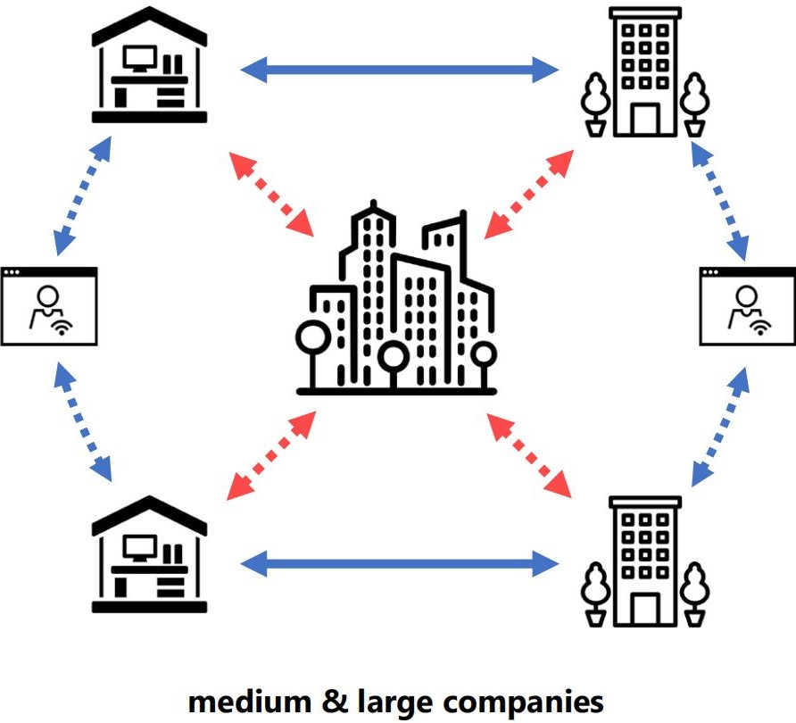
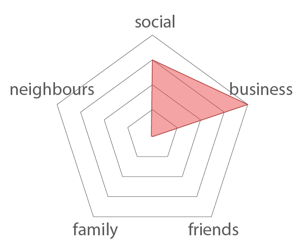
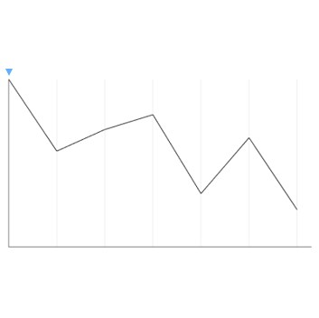
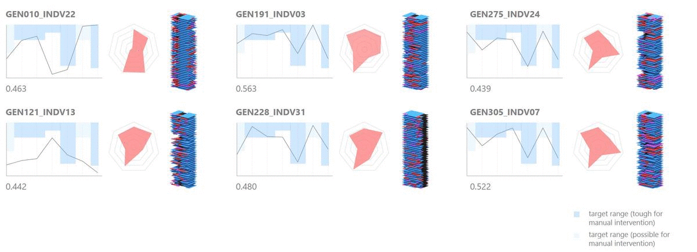

Beyond Mixed Use: An Evolutionary Design Framework for High-rise Programming.
Summary
The motivation for this research stemmed from the changing role of work and its implication on the built environment. Office buildings occupy some of the most significant locations within cities, yet the occupancy rate of office buildings is extremely low resulting in unjustified environmental footprint and urbanistic inefficiencies such as the creation of inactive districts beyond working hours.This thesis aims to operationalize the public and private space relationship within the office building and identify synergies between work and life that improve the utilization of the built environment and to enhance working and living within the city, activating the city beyond working hours.
The approach of the proposal is fundamentally programmatic, it aims to identify potential relationships between public and private functions that are mutually beneficial. Methodologically, computational design techniques including generative design, graph network analysis, metric analysis and evolutionary optimization, will be used together to create a computation system that optimizes a complex network of programs in physical space.
The contribution of this work challenges the notion of typology without substituting it with an indiscriminate notion of mixed use, but instead utilizes the proposed computational system to achieve an optimized complex arrangement of programs that promotes the harnessing of synergies between these programs as opposed to them existing as separate entities within a building.
Name
Kady Ho
Mentor
Stylianos Dritsas
Typology
Office, Public Space, Mixed Use
Site Location
Singapore

![]()
![]()
Disclaimer: This webpage is best viewed at resolutions above 1920 x 1080, minimally a 15" screen laptop, you may experience truncated or overlapping content at resolutions lower than that specified.
This webpage is also interactive, clickable buttons will show a different cursor upon hover. As the preliminary study section is quite lengthy, you may wish to skip to the design framework section by clicking on the top most logo on the bottom right dock.
Hope you enjoy your read!
This webpage is also interactive, clickable buttons will show a different cursor upon hover. As the preliminary study section is quite lengthy, you may wish to skip to the design framework section by clicking on the top most logo on the bottom right dock.
Hope you enjoy your read!
"...stack of uses linked by elevators..."
"...increasing the degree of interdependence of uses..."
"...future of the supertall lies towards programmatic innovations..."
"...more completely integrate and blend user needs..."
Research Questions
An initial idea of having a vertical, continuous park that acts as a secondary circulation throughout the building, linking relevant programs drives the direction of my research.1. How may companies' working models change in response to the recent pandemic, and how will this affect the demand for different types or designs of work places?
2. How can the elevator-centric vertical circulation in tall buildings be challenged while ensuring the proposed alternative circulation will be utilised?
3. How can public spaces be meaningfully integrated with office spaces as opposed to their current existence as two separate public and private entities in the same building?
Understanding Offices
Evolution of Offices
Over the decades, the workplace has been redesigned reshaped by the changing dynamics of the work culture. The open plan office we are all familiar with is not something new, it was popoular back in the early 1900s. It stemmed from very different reasons compared to current times, mainly to facilitate easy vigilance over the employees to ensure maximised productivity. As the years passed, the motivation behind the open plan has received much criticism regarding its failure to take into account the humanistic and social aspect.Towards the 1960s, cubicle designs for office spaces became popularised by Herman Miller, an office furniture designer. His cubicle partition design was motivated by his desire to create an office that is able to accomodate the employees' changing needs without having to purchase new furniture and to allow for a certain degree of privacy and personalization. He recognised that workers perform better within a personalized territorial enclave. The cubicle typology was popular for about three decades before the return of the open plan office in the 1990s, but this time with a different motivation, to instead spur collaboration.
Soon after, the term co-working spaces was made popular in the 2000s by Brad Neuberg. Characterised by the multiple types of workspace with various degree of privacy to choose from, co-working spaces are shared working spaces amongst mobile individuals from different companies or even freelancers. The co-working spaces also act as a platform to bring together like minded people to promote discussion, sharing of knowledge, networking and collaboration.
Post-pandemic Workplace
The Covid-19 pandemic has forced many firms to put on hold their office operations and to migrate work operations from physical to digital and online platforms. William J Mitchell, Director of the Design Laboratory at MIT argued that the impact of the ubiquitous and robust information technology enabling connectivity beyond the physical will stimulate a social and behavioural change at a scale amountable to that of Industrial Revolution. In relation to that, Frank Duffy predicts that the synchrony, the need for employees to be working at the same time, and co-location, the need for employees to be working at the same space, requirements of the working culture will soon be displaced. Nine-to-five jobs might become a thing of the past.The unexpected situation forced by the pandemic has affirmed the ability of current information technology in supporting remote working without significant detrimental effects on work productivity, suggesting that in the long term we might expect to observe possible shifts in working patterns away from the need of a permanent physical office space. Some firms are also looking at the possibility of adopting distributed offices (i.e. decentralising). As the office becomes decentralised into multiple locations, it will likely be closer to where the employees live. This would allow employees to safely lower mass exposure to the risk of infection in hgih risk places such as the transit and high density office building itself.
In addition to the possible shift in office typology trends, we will be expecting office spaces to be used differently from before. In the short term, there are too much uncertainty for major changes to be implemented, smaller actions of precaution will however be actively taken. This includes measures such as social distancing, active cleaning of spaces with high level of interaction and contact.
On the other hand, there are split opinions regarding the outlooks of open plan offices in the future. Some speculates the death of open plan offices, while others believe that if precautions are well planned and suitable adjustments are implemented in other aspects like improving existing ventilation systems, buildings may get healthier even if it may look the same as before.
Prevailing Concerns
Sedentary Lifestyle
As mentioned in the previous post-pandemic workforce section, there will be greater focus placed on the health and well-being of workers. This is not limited to the health concerns brought up because of Covid-19, but reviewing the pre-existing concerns relating to office lifestyle before the recent global pandemic.A study by BMC Public Health found that 41% of Singapore's workforce lead a sedentary lifestyle, sitting for at least 8 hours a day, identified as an independent risk factor for premature mortality. The nature of day to day desk office jobs results in the unhealthy tendency for workers to lean towards a sedentary lifestyle. Sedentary lifestyle is one of the main driving factor of another growing epidemic known as the obesity epidemic.
A research was conducted to capture the successes of firms in trying to promote for higher level of physical activities among employees. Some important factors that employees felt encouraged people to get up and walk around more includes the precense of views to the outdoors and attractive environmental surroundings, having access to places to walk or jog, alternative to sitting at desks, having fitness facilities on site etc.
Some may question why was physical activity promotion not addressed in many or most building designs in the past? Perhaps, there are other concerns of higher priority to consider for when planning and designing a building. For example in the context of an office tower, vertical circulation has to be efficient or it will directly negatively affect the productivity of companies. This results in little space for innovation in using verticality as a means to promote for higher levels of physical movement.
Low Building Occupancy Rates
"Architects have little motivation to measure and hence no vocabulary to describe how efficiently office buildings are occupied over time." -Francis Duffy (2008)The negligence to review this metric has resulted in office buildings being heavily underutilised' and this has arguably also restricted architects imagination when planning the design for office buildings.
Offices are typically busy for only 8 hours a day and 5 days a week, this makes up 23.8% of the time in a week. However, what is not apparent to the general public is that within this duration of "busy" period, the occupancy rate of offices is only at its peak for a relatively short duration of time and not sustained throughout the entire time.
Demand Trends for Offices
By Geography
General demand for office units across Singapore by districts, inferred from the 75th percentile unit price per square foot of rental per month of transactions recorded. Singapore district code was originally used as postal districts but have been widely used by the real estate industry in classifying properties by district. District 01 and 02 have the highest concentration of office buildings in Singapore while Districts 01, 02 and 06 are considered to be part of the Singapore Central Business District (CBD).By Rent-Vacancy
Despite the government's effort to decentralise offices in the Central Business District Area (CBD), throughout the past few quarters of the years from the third quarter of 2017, there is a consistent increase in demand for Grade A offices, which are mainly offices located within the CBD, reflected by the decrease in office vacancy rate. As compared to Grade A offices, the non-Grade A offices are gradually suffering from a decline in demand since 2012.

Conclusion
Despite the government's effort to push for decentralisation of offices in the CBD, the demand of offices within the CBD has been on the rise. However, the effects of the pandemic is likely to escalate the plans for more companies to take on a decentralised office model with the viability of the work from home model validated during the forced work from home orders during the circuit breaker. Companies realise there is no need for employees to be physically together daily for work to be productive. It can be postulated that greater flexibility will be granted for employees to choose the environment they work best in, be it at home, at co-working spaces, at informal working spaces like cafes or maybe in a formal office setting as per before.
"When the pandemic is over, one in six workers is projected to continue working from home or co-working at least two days a week, according to a recent survey by economists at Harvard Business School." -Thompson
"If many companies find that remote work attenuates the cultural bonds of the workforce, offices could stage a furious comeback." -Thompson
However, offices will likely stay relevant as physical interactions between colleagues are still required to foster company culture, especially for larger firms. These factors discussed would likely result in an increase in demand for both small offices and co-working spaces, as companies choose these cheaper options over renting a large office to house all its employees within the city. Moving towards this trend, companies would likely only gather at a centralised office or perhaps a rented meeting or conference room when needed.

Secondary Circulation
Case Study - Solaris
Solaris is located within the Fusionopolis cluster in Singapore, as a office, research and development (R&D) facility for the one-north business park. A distinctive feature which differentiates this building from other ecological-driven, vertical urbanism projects was the incorporation of a continuous, landscaped linear ramp which runs spiral on the perimeter of the building from the ground to the top floor. This will be the focus of this study.With the intention to enhance the ecosystem at the site, the linear ramp was populated with a continuous belt of lush greenery to allow for the growth and inhabitance of both plants and organisms. As the plants grow with time, the dense crowns of the trees will serve as a shading strategy to reduce solar heat gain by the building. The innovative addition of the ramp linking terraces at every level provides a social, interactive and creative environment for the building occupants.

A graph-based analysis was conducted in both 2D and 3D to analyse the impact of the continuous ramp in enabling access to outdoor terraces located throughout the perimeter of the building. The shortest distance to the available outdoor terrace from every analytical node in the network was computed for the 3rd and 8th storey. As reflected on the legend, the hotter the colours, the more accessible the outdoor terraces are to the specified node in terms of distance, while the grey represents that the node is approximately more than 100m away from the nearest outdoor terrace. For the two analyses diagrams on the right, it computes the shortest distance to each terrace for each level separately, this is representative of a case where the user chooses not to take the stairs or elevators.
For the analysis diagram at the bottom, it takes into account the usage of the fire escape stairs and elevators as part of a 3D network connecting the office spaces and outdoor terraces. It showed better balance of connectivity to the outdoor terraces from the two blocks of offices, though in reality it is likely that the need to use the fire escape stairs to access the outdoor terrace facilities would deter a significant portion of the users from using these spaces. This could be a likely reason that deterred the success of the ramp as an alternative vertical circulation.
For the analysis diagram at the bottom, it takes into account the usage of the fire escape stairs and elevators as part of a 3D network connecting the office spaces and outdoor terraces. It showed better balance of connectivity to the outdoor terraces from the two blocks of offices, though in reality it is likely that the need to use the fire escape stairs to access the outdoor terrace facilities would deter a significant portion of the users from using these spaces. This could be a likely reason that deterred the success of the ramp as an alternative vertical circulation.
Analysing the first 8 storey of the building in 3D, this study observed the changes when a length multiplier was added in an attempt to model people's general reluctance to use the fire escape stairs. On the right, the two diagrams compare the stairs length multiplier at one time (bottom) versus five times (top). It is observed that the difference is reasonably insignificant, suggesting the ramp circulation works well when used with the fire escape staircases.
However, to have to walk a distance of 100m in an indoor setting is greatly different from outdoors. The perceived acceptable distance required to walk around indoors would relatively be shorter, as such for the diagram on the bottom, the "acceptable" distance have been adjusted from 100m to 80m to check if a significant area will be affected. As compared to the 100m threshold, the percentage of "sufficiently close" areas to outdoor terraces have decreased from 93.9% to 74.3%. Thought it may be unintentional, this study shows the possible use of other forms of vertical circulation to complement and increase the accessibility of the external ramp.
However, to have to walk a distance of 100m in an indoor setting is greatly different from outdoors. The perceived acceptable distance required to walk around indoors would relatively be shorter, as such for the diagram on the bottom, the "acceptable" distance have been adjusted from 100m to 80m to check if a significant area will be affected. As compared to the 100m threshold, the percentage of "sufficiently close" areas to outdoor terraces have decreased from 93.9% to 74.3%. Thought it may be unintentional, this study shows the possible use of other forms of vertical circulation to complement and increase the accessibility of the external ramp.
Site Selection
Office Density and Vacancies
In selecting a site for an office-public program tower to marry the concept of work, live and play and to rejuvenate the after-work life within the city for neighbouring workers and residents, the site should be an area that is dense with offices and within close proximity to residentials to draw in crowd during the weekends.Focusing on the figure on the right, the density of the voronoi cells represents the density of office within the city, the denser cells represent likely higher human traffic and activity. This narrows down the scope of site selection to the Southern part of the CBD where it seems to have greated density of wokers. Another metrics mapped was the number of property listings by office buildings found on a commercial listing website. This was mapped to possibly give an idea on the pattern of the demand of offices by location within the CBD. Generally, a majority of 79.8% of the office buildings have five or less rental listings on the commercial property listing website. With only five buildings with more than twenty rental listings, namely: International Plaza, North Bridge Centre, Tong Eng building, The Central, One Raffles Place which are all non-Grade A offices with the exception of One Raffles Place. This further supports the findings regarding declining demand for non-Grade A offices.
Residential Districts
Unlike typical centralised residential districts which are populated with an abundance of communal and public amenities like parks, hawker centers, clinics, community centres etc. to support quality living, the city seems to lack facilities to cater to the residents living within the city. The site should be selected to be accessible to this population of residents.Referring to on the right, the North-West area of the CBD has clusters of residential use cadastral land. These are part of the Newton, Rocher and River Valley residential area which would have access to neighbourhood communal facilities planned. It is mainly the North-East and Southern areas with scattered residential plots within the city which would lack amenities to boost the liveability of their neighbourhood. On the South-East of the CBD lies Marina South, which under the URA Master Plan 2019 will become an extension of the CBD which will also become the pioneering residential, car-lite district within the city. The site could be selected to become the bridge between the new district and the current CBD, given its focus on improving livability to promote a friendly work, live and play environment.
Compounded Mapping
Overlaying the relevant information, an additional layer that represents a 400m radius from each MRT station is mapped to take into consideration accessibility to the MRT transportation network. A site was selected, adhering to the following guiding criterias:1. An area with relatively dense office buildings.
2. An area that is reasonably close to a scatter of residential buildings.
3. A cadastral plot that is assigned to be for commercial mixed use under the URA Masterplan 2019.
4. An area with relatively high accessibility to the MRT transportation network.
The following plot, highlighted in yellow outline, was selected as it fulfilled the above criterias and offered an opportunity to bridge the current CBD with the future residential extension towards Marina South, softening the transition between the busy city life and support living within the city.

Programmatic Synergies
Personas Study
As this thesis concerns itself with both the office worker population and residential population, a relatively wide range of stakeholders with varying interests are involved. A study of generic personas of office workers and residents were conducted as an investigation to explore the dependencies of programs, to create a network of programs that synergizes to complement each other. The activity level by the hour and for both weekday and weekends for the different progrms are also overlaid with the active hours of offices to evaluate the activation of spaces beyond office working hours.CONTEXTUAL:
This offers a greater variety of options and settings for office workers and nearby residents to enjoy in the evening and weekends. Passionate expatriates may wish to set up temporary stalls to share traditional delicacies from their home country or immerse themselves with the local food culture. This international food street is inspired by the local style night market, "Pasar Malams", that is a prominent yet diminishing experience of Singapore's food and night culture.CHARACTER:
An expatriate that values new experiences, cultural exchanges, social interactions and learning opportunities.OPPORTUNITY:
To promote for mutual cultural exchanges, a linear international food street with a mixture of permanent and temporary stalls that allows for interested parties to rent a stall to sell local dishes and international delicacies from around the world.ACTIVITY LEVEL BY HOUR:
RELATION & INTERACTIONS:
CONTEXTUAL:
Office-related amenities like meeting rooms, breakout rooms, resting lounges, games rooms or terraces can be shared within each stack of offices across multi levels. This increases the chances of interaction between the different stakeholders and supports potential exchange of knowledge or building of networks between individuals or perhaps even between companies.CHARACTER:
An entrepreneur whom recently set up a start-up and is actively seeking for opportunities to expand his network and business.OPPORTUNITY:
To promote chances for entrepreneurs to interact with both young talents with creative ideas and established companies with the financial power, amentities can be planned for shared use between offices and co-working spaces. These informal spaces can be used to create chances for interactions.ACTIVITY LEVEL BY HOUR:
RELATION & INTERACTIONS:

CONTEXTUAL:
A gradient of different informal working station experience and environment can be explored. They can be private or shared, indoors or outdoors, isolated or found in clusters, found in a quiet area or an area with ambient noise etc. There are opportunities for both private and shared informal working spaces to blend within the park, hinting that parts of the park can potentially be included to be part of the office as a private terrace.CHARACTER:
A recent graduate whom just entered the industry, a self-driven, motivated individual that strives for constant improvements. He values flexibility over work schedules and environment.OPPORTUNITY:
Informal working stations in various settings, e.g. areas with varying ambient noise levels, can be made available. An educational center that accommodates the exchange of knowledge for individuals and institutes to both share and learn.ACTIVITY LEVEL BY HOUR:
RELATION & INTERACTIONS:
CONTEXTUAL:
Blessed to be situated within a park, children from the childcare or preschool are granted accessibility to have intimate interaction with nature. There are greater opportunities for hands on learning about the ecological system, to learn about fauna and flora through the physical environment or perhaps even farming activities. The close proximity allows for parents to possibly be part of these activities for special events without having to compromise work.CHARACTER:
A working parent who fears that being preoccupied with work would cause them to miss out on the process and important milestones of their children growing up.OPPORTUNITY:
Childcare centres or preschools can be located within the building to create chances for parents to spend time with their children during breaks from work. Time can be spent over meals or perhaps engaging in activities within the park.ACTIVITY LEVEL BY HOUR:
RELATION & INTERACTIONS:
CONTEXTUAL:
The linearity of the park offers opportunity for a segment of it to be designed to allow for pet lovers to interact with or even train their pets. The presence of these unique facilities will create a lively, vibrant activity node that attracts pet lovers, not limiting to pet owners. It may be interesting for the pet center to organise occasional collaborations with the childcare centers to allow for children to interact with the animals as well.CHARACTER:
As a pet owner living with only her husband, she worries about leaving their pets alone at home for long hours as both of them go for work.OPPORTUNITY:
A pet daycare boarding or training center may be a complementary program that suits the interest of these office workers, perhaps extending to residents who live nearby. A segment of the park could be designed to be pets-friendly.ACTIVITY LEVEL BY HOUR:
RELATION & INTERACTIONS:
CONTEXTUAL:
These pods may also serve the public for both individual and group meditation, exercise or yoga sessions. Different sizes of pods can be provided to cater to the different purposes. The smaller pods can be placed closer to offices and isolated from high activity nodes or programs, situated in a serene environment Additionally, integration of alternative vertical circulations that provides routes that are perceived to offer shortcuts to get around can promote physical activity.CHARACTER:
She puts extra effort to upkeep her health including the different aspects: dietary, mental and physical well-being. The fast-paced and sedentary nature of work tends to compromise these factors.OPPORTUNITY:
Meditation pods may be scattered around the parks in close proximity to the offices to encourage office workers to take mental breaks during work. Strategic placement of visible staircases and ramps to connect essential spaces can help provide opportunities for people to stay active.ACTIVITY LEVEL BY HOUR:
RELATION & INTERACTIONS:


CONTEXTUAL:
The play environment could take advantage of the vertical space available in creating a multi-level play environment. Inspiration can be taken to the prior reference study of Admiralty Park in Singapore in Chapter 3, where an extensive network of slides was embedded within nature taking advantage of the naturally endowed hilly terrain This play area should be located in close proximity to the proposed childcare or preschool.CHARACTER:
In his early childhood, he is playful, active and curious. He seeks for opportunities to play and to express himself.OPPORTUNITY:
An unconventional and inexhaustive play environment would stimulate creativity in early childhood as they develop different ways to interact with and play within the built environment. A play environment of different scale as compared to the conventional playground could be explored.ACTIVITY LEVEL BY HOUR:
RELATION & INTERACTIONS:
CONTEXTUAL:
The spatial environment required for work and study are similar yet the potential time of use is complementary in nature, making it ideal for shared use. Sharing these spaces also sparks opportunities for interactions between students and working adults. These interactions and observations with people from different walks of life, different career may benefit in widening the perspectives of young students providing them with insights from the perspective of working adults.CHARACTER:
A student seeking for a conducive and low cost environment as an alternative place to study at, conventionally some of these options include libraries and cafes.OPPORTUNITY:
Informal working spaces embedded in different pockets within the vertical park or some indoor spaces could be partially accessible to the public, perhaps by a time-cycle, to double up as studying spots for students at night or over the weekends.ACTIVITY LEVEL BY HOUR:
RELATION & INTERACTIONS:
CONTEXTUAL:
While these amenities have no direct relations to offices, they are often complementary to the needs and wants of office workers or companies. Hawker centres provide affordable food options that are considered more financially sustainable in the long run, as opposed to pricey cafes and restaurants within the city. Sports facilities can be booked and utilised regularly by companies to host cohesions to establish rapport between colleagues and teams.CHARACTER:
As the pillars of the family, they are often concerned with the practical aspects of things. Things like the convenience of having sufficient communal amenities that boosts the liveability of their neighbourhood.OPPORTUNITY:
It is important not to overlook the importance of communal amenities like hawker centres, sports facilities etc. commmonly available in regular neighbourhoods. As the city had previously not been planned to support living, but traditionally been focused on work, these facilities are seemingly lacking within the city.ACTIVITY LEVEL BY HOUR:
RELATION & INTERACTIONS:
CONTEXTUAL:
While climbing staircases could be considerably exhausting and relatively dull for the elderly, there is potential for the vertically scaling park to be connected through a continuous or a series of ramps to provide a comfortable yet different experience as opposed to the usual horizontal strolls within the neighbourhood.CHARACTER:
Elderly concerned with staying active both mentally and physically. Life long learning is a traditional asian practice and volunteerism proves to be popular amongst the elderly as they wish to give back to the society.OPPORTUNITY:
Throughout the linear park, another segment could be designed to support the promoting of motor abilities to be devloped as a physical environment that supports the conducting of light and simple exercises or perhaps even physiotherapy in nature.ACTIVITY LEVEL BY HOUR:
RELATION & INTERACTIONS:
Synergetic Relations
The above scenarios inspired by the persona studies were then consolidated into a series of programmatic synergies which will be used to inform the desirability of adjacencies between the programs.Synergetic Time Cycle
Below shows the estimated expected time occupancy schedule of the different programs over a period of 24 hours for both weekdays and weekends.Proposed Approach and Workflow
Overall Framework
Excel Frontend
INPUT DATA
Greedy Generation
Introduction
The program requirements list mentioned in the previous section is a sequence of programs and target requirements that informs the design generation process. The design generation algorithm borrows the concept of a greedy generation for which it goes down this sequence of programs paired with specific spatial dimensions and fit them into the most suitable available space at each step that best satisfies the physical requirements.
Design Parameters
CONSTANT PARAMETERS
TOWER DIMENSIONS
This includes the following parameters: building breadth, width, number of levels and floor height.SPATIAL ATTRIBUTES
This stores the target area and aspect ratio range, the ideal heigh range and target counts for the number of spaces for each program.EXPECTED ACTIVE HOURS
This stores a simplified expected occupancy schedule for every program over a period of 24 hours for both weekdays and weekends.VARIABLE PARAMETERS
PROGRAM REQUIREMENTS LIST
A sequence of program requirements, each program requirement consist of the program id, target width and target breadth of each space.LIFT ORIENTATION FLIP
By convention, the default orientation has the longer edge defined as the width, this parameter consist of a boolean value corresponding to the flipping of its orientation.LEVEL TERMINATE COUNT
This defines the number of program requirements to be skipped before the current level is terminated and next level initiated.PROGRAM REQUIREMENT DELETE COUNT
This defines the number of times each program requirement can be skipped before it is permanently removed from the program requirement list.AREA PERCENTAGE THRESHOLD
This sets the percentage threshold for one of the space selection methods ("Forced Fit") for the generation of the tower.Space Management
The following section explains the concept and rationale behind the design generation algorithm and a brief breakdown of the details including: how the space options are derived at each step and how the most optimal space is decided on from the pool of options. For more in-depth explanation behind the execution of the algorithm, please download the following document (an extraction of Chapter 6 from my thesis book).
SPACE DIVISION
SUB-DIVISION OF SPACES
The sub-divided available spaces are retrieved by extending the edges of the occupied spaces.SPACE RECOGNITION
FINDING THE LARGEST SPACES
An algorithm backed by heuristics is then used to find the largest possible rectangular spaces within the available spaces, relative to the occupied spaces.SPACE SELECTION
Design Generation - Overview
This video gives a quick overlook of how the design generation algorithm works. On the right we have the list of programs, followed by the target dimensions and the number of times the program was skipped in the list as no suitable spaces were available for fit.
Once the skip counter reaches the program requirement delete count specified for the iteration, one of the variable parameters introduced earlier, the program requirement will be removed from the sequence of programs.
Introducing the level terminate count, it defines the number of consecutive programs to be skipped before the algorithm moves on the the next level or if the generation is already at the last level, it would trigger the termination of the generation algorithm itself.
Once the skip counter reaches the program requirement delete count specified for the iteration, one of the variable parameters introduced earlier, the program requirement will be removed from the sequence of programs.
Introducing the level terminate count, it defines the number of consecutive programs to be skipped before the algorithm moves on the the next level or if the generation is already at the last level, it would trigger the termination of the generation algorithm itself.
Design Generation - Detailed
On the right is a video that shows a detailed step by step walkthrough of the generation algorithm. It demonstrates every portion of the design generation algorithm including: space division, space recognition and space selection ("Exact Dimension Fit", "Forced Fit" and "Flushed Fit"). It will generally be easier to understand the following video if you have read Chapter 6 of my thesis book which was introduced and linked under the Space Management section.
Evaluation
Introduction
With an algorithm capable of generating mass iterations of programmatic spatial arrangements, there is a need to set out different criterias to comprehensively evaluate the performance of each iteration. A total of seven evaluation criterias were identified, classified into three main categories: Programmatic, Spatial and Facilities Accessibility.
PROGRAMMATIC
PROGRAMMATIC REQUIREMENT FULFILMENT
This measures the extent the specified restrictions regarding the target number of spaces to be allocated for certain programs are being met.PROGRAMMATIC ADJACENCY
This measures the net quantified synergy arising between programs adjacent to each other based off the programmatic adjacency matrix set out on excel.EXPECTED ACTIVE OCCUPANCY SCHEDULE
This measures the average expected hours of occupancy throughout the week. The score is normalized with the area of the respective spaces accordingly.SPATIAL
NUM SPACES PER LEVEL
This measures the closeness of the average number of spaces per level as compared to a set target range.PHYSICAL CONSTRAINTS
This measures the closeness of the area, aspect ratio and floor height of each space as compared to a set target range specific to each program type.FACILITIES ACCESSIBIILITY
SECONDARY CIRCULATION CONTINUITY
This measures the potential to vertically connect public or semi-public spaces between levels, where the spaces are either overlapping or staggered, within a sthreshold distance.STACKED FACILITIES ACCESSIBILITY
This measures the accessibility from office spaces to shared facilities within two floors above and below, under a specified threshold distance.
PREVIOUS
PROGRAMMATIC
PROGRAMMATIC REQUIREMENT FULFILMENT
This measures the extent for which the spcified restrictions regarding the target number of spaces to be allocated for certain programs are being met. Penalty scores are given proportional to the extent of deviation from the target count.PROGRAMMATIC
PROGRAMMATIC ADJACENCY
This measures the net quantified synergy arising between programs adjacent to each other based off the programmatic adjacency matrix set out out on excel previously. The plan on the left shows a typical floor plan with the yellow line representing a corridor suggested by the generation algorithm, based off this suggested corridor, horizontal adjacencies are generated as visualised by the grey lines. Vertical adjacencies are generated between only programs with positive adjacency score with the additional physical restriction having to be able to place a flight of stairs complying to proper dimensions. A cumulative score is then computed.
PROGRAMMATIC
EXPECTED ACTIVE OCCUPANCY SCHEDULE
This measures the average expected hours of occupancy throughout the week based on the expected occupancy schedules of the programs set out in the excel spreadsheet previously. The score is normalized with the area of the respective spaces accordingly.SPATIAL
NUM SPACES PER LEVEL
This measures the closeness of the average number of spaces per level as compared to a set target range. A positive score is given when the level has number of spaces which falls within the target range while a negative score proportional to the extent of deviation is given when the number of spaces for the level falls outside of the target range.SPATIAL
PHYSICAL CONSTRAINTS
This measures the compliance of the area, aspect ratio and floor height to a set of target range specified for each program in the excel spreadsheet previously. Similarly, a positive score is given when the value falls within the target range and a negative score will be given as a penalty when the value falls outside of the target range.FACILITIES ACCESSIBILITY
SECONDARY CIRCULATION CONTINUITY
This measures the potential to vertically connect public or semi-public spaces between levels, where the spaces are either overlapping or staggering within a threshold distance that allows for a flight of stairs of appropriate dimensions to be fitted. (The alternating between red and blue vertical connections is used to visualise discontinuity between levels.)FACILITIES ACCESSIBILITY
STACKED FACILITIES ACCESSIBILITY
This measures the accessibility from office spaces to shared facilities within two floors above and below, under a specified distance threshold. Different facilities have different weightages. Distance between program spaces based off the suggested circulation path is being used as an additional weightage, closer programs are scored higher. The score is then scaled by the square root of the number of unique facilities accessible within each stack.
NEXT
Evolutionary Algorithm
Multi-Objective Evolutionary Optimization (NSGA-II)
A multi-objective evolutionary optimization following the NSGA-II Algorithm was implemented in search for an optimized solution. Following shows the input parameters, which are the exact input parameters required for the generation of each iteration, that will be evolved with generations along with the fitness goals, the evaluation criterias introduced previously, to be optimized.
INPUT
PROGRAM REQUIREMENT SEQUENCE
LIFT POSITION X
LIFT POSITION Y
LIFT ORIENTATION FLIP
LEVEL TERMINATION COUNT
PROGRAM REQUIREMENNT DELETE COUNT
AREA PERCENTAGE THRESHOLD
LIFT POSITION X
LIFT POSITION Y
LIFT ORIENTATION FLIP
LEVEL TERMINATION COUNT
PROGRAM REQUIREMENNT DELETE COUNT
AREA PERCENTAGE THRESHOLD
FITNESS GOALS
A. PROGRAMMATIC REQUIREMENT FULFILMENT
B. PROGRAMMATIC ADJACENCY
C. EXPECTED ACTIVE OCCUPANCY SCHEDULE
D. NUM SPACES PER LEVEL
E. PHYSICAL CONSTRAINTS
F. SECONDARY CIRCULATION CONTINUITY
G. STACKED FACILITIES ACCESSIBILITY
B. PROGRAMMATIC ADJACENCY
C. EXPECTED ACTIVE OCCUPANCY SCHEDULE
D. NUM SPACES PER LEVEL
E. PHYSICAL CONSTRAINTS
F. SECONDARY CIRCULATION CONTINUITY
G. STACKED FACILITIES ACCESSIBILITY
RANKING MECHANISM
Evolutionary Optimization Results - Overview
pareto optimal indvs
separate fitness overview
Evolutionary Optimization Results - Individual Fitness Performance
FITNESS BEST

composite Score: 0.431
GEN282_INDV22
lift_position_x, lift_position_y = 14, 12
lift_orientation_flip = TRUE
level_termination_count = 14
program_req_del_count = 14
area_perc_threshold = 9.98%
lift_orientation_flip = TRUE
level_termination_count = 14
program_req_del_count = 14
area_perc_threshold = 9.98%
FITNESS WORST MEDIAN
composite Score: 0.198
GEN001_INDV13
lift_position_x, lift_position_y = 37, 10
lift_orientation_flip = TRUE
level_termination_count = 13
program_req_del_count = 14
area_perc_threshold = 10.16%
lift_orientation_flip = TRUE
level_termination_count = 13
program_req_del_count = 14
area_perc_threshold = 10.16%
FITNESS BEST
composite Score: 0.431
GEN219_INDV14
lift_position_x, lift_position_y = 0, 4
lift_orientation_flip = TRUE
level_termination_count = 14
program_req_del_count = 12
area_perc_threshold = 3.46%
lift_orientation_flip = TRUE
level_termination_count = 14
program_req_del_count = 12
area_perc_threshold = 3.46%
FITNESS WORST MEDIAN

composite Score: 0.198
GEN135_INDV03
lift_position_x, lift_position_y = 18, 12
lift_orientation_flip = FALSE
level_termination_count = 10
program_req_del_count = 13
area_perc_threshold = 6.53%
lift_orientation_flip = FALSE
level_termination_count = 10
program_req_del_count = 13
area_perc_threshold = 6.53%

FITNESS BEST
composite Score: 0.431
GEN320_INDV08
lift_position_x, lift_position_y = 12, 17
lift_orientation_flip = TRUE
level_termination_count = 15
program_req_del_count = 14
area_perc_threshold = 8.28%
lift_orientation_flip = TRUE
level_termination_count = 15
program_req_del_count = 14
area_perc_threshold = 8.28%
FITNESS WORST MEDIAN
composite Score: 0.198

GEN113_INDV19
lift_position_x, lift_position_y = 18, 12
lift_orientation_flip = TRUE
level_termination_count = 15
program_req_del_count = 10
area_perc_threshold = 5.84%
lift_orientation_flip = TRUE
level_termination_count = 15
program_req_del_count = 10
area_perc_threshold = 5.84%
FITNESS BEST
composite Score: 0.431
GEN216_INDV32
lift_position_x, lift_position_y = 9, 1
lift_orientation_flip = TRUE
level_termination_count = 11
program_req_del_count = 14
area_perc_threshold = 8.03%
lift_orientation_flip = TRUE
level_termination_count = 11
program_req_del_count = 14
area_perc_threshold = 8.03%
FITNESS WORST MEDIAN
composite Score: 0.198

GEN091_INDV14
lift_position_x, lift_position_y = 17, 12
lift_orientation_flip = TRUE
level_termination_count = 14
program_req_del_count = 13
area_perc_threshold = 5.27%
lift_orientation_flip = TRUE
level_termination_count = 14
program_req_del_count = 13
area_perc_threshold = 5.27%
FITNESS BEST
composite Score: 0.431
GEN067_INDV42
lift_position_x, lift_position_y = 18, 12
lift_orientation_flip = TRUE
level_termination_count = 8
program_req_del_count = 14
area_perc_threshold = 5.19%
lift_orientation_flip = TRUE
level_termination_count = 8
program_req_del_count = 14
area_perc_threshold = 5.19%
FITNESS WORST MEDIAN

composite Score: 0.198
GEN098_INDV29
lift_position_x, lift_position_y = 18, 12
lift_orientation_flip = TRUE
level_termination_count = 12
program_req_del_count = 11
area_perc_threshold = 2.95%
lift_orientation_flip = TRUE
level_termination_count = 12
program_req_del_count = 11
area_perc_threshold = 2.95%
FITNESS BEST
composite Score: 0.431
GEN191_INDV03
lift_position_x, lift_position_y = 18, 12
lift_orientation_flip = TRUE
level_termination_count = 14
program_req_del_count = 14
area_perc_threshold = 5.16%
lift_orientation_flip = TRUE
level_termination_count = 14
program_req_del_count = 14
area_perc_threshold = 5.16%
FITNESS WORST MEDIAN
composite Score: 0.198
GEN135_INDV45
lift_position_x, lift_position_y = 18, 12
lift_orientation_flip = FALSE
level_termination_count = 15
program_req_del_count = 13
area_perc_threshold = 10.39%
lift_orientation_flip = FALSE
level_termination_count = 15
program_req_del_count = 13
area_perc_threshold = 10.39%
FITNESS BEST
composite Score: 0.431
GEN010_INDV22
lift_position_x, lift_position_y = 11, 10
lift_orientation_flip = TRUE
level_termination_count = 15
program_req_del_count = 11
area_perc_threshold = 7.28%
lift_orientation_flip = TRUE
level_termination_count = 15
program_req_del_count = 11
area_perc_threshold = 7.28%
FITNESS WORST MEDIAN
composite Score: 0.198
GEN001_INDV24
lift_position_x, lift_position_y = 8, 17
lift_orientation_flip = FALSE
level_termination_count = 5
program_req_del_count = 12
area_perc_threshold = 5.75%
lift_orientation_flip = FALSE
level_termination_count = 5
program_req_del_count = 12
area_perc_threshold = 5.75%
Evolutionary Optimization Results - Shortlisted
Some individuals are selected from interesting moments reflected in the overall graph which highlights the composite score of the best performing individuals through generations. For each evaluation criteria, the overall results throughout the generations were reviewed. Based on my judgement and understanding of the results, a set of acceptable regions were concluded, shown as the blue area on the graphs. Apart from having every of its fitness scores falling within the acceptable ranges set out, the following individual was selected as it visibly has the public and semi-public spaces flushed on one side of the building, and it will help in making the path finding throughout the secondary circulation more intuitive.

Design Development - Plans
Here shows all the base plans generated from the algorithm. Private spaces are represented in blue, semi-public spaces in purple and public spaces in red. The yellow lines represent the corridor suggested by the design generation algorithm. The plans are then post-rationalized to ensure there are no weird, unwanted moments in the building (e.g. unsually narrow spaces).When observed carefully, you will realise that most of the plans are kept relatively similar to the base plans, however on some levels there are obvious drastic changes, this is to include programs that are missing from the base programmatic arrangement suggested by the algorithm and make space to allow for a continuous secondary circulation. It is not expected that a bulletproof solution will emerge. This gives the designer the opportunity and design space to review the suggested skeletal programmatic arrangement.
Design Development - Elevations
Below shows the base elevations and programmatic distribution on elevation. Following the progrmmatic distribution are two animations that depict the activated hours of the program spaces based on the occupancy schedule defined.